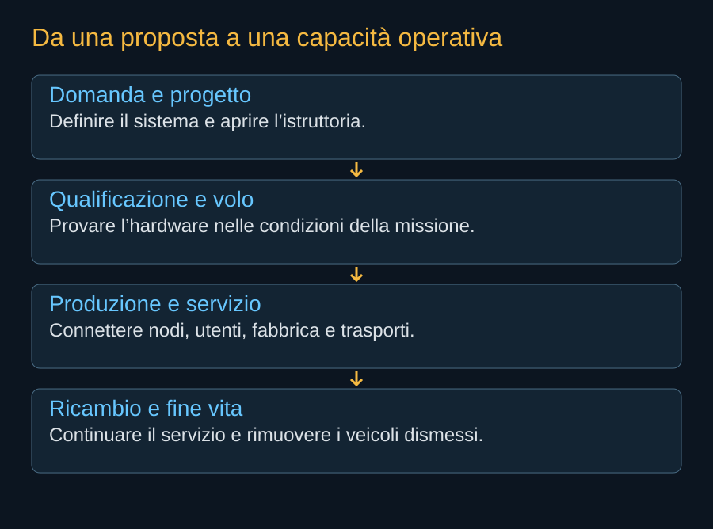

Il nome Starmind arriva in un settore che aveva già cominciato a muoversi. Nel 2025 Google presentò Project Suncatcher e Starcloud portò in orbita il proprio primo dimostratore. In Europa lo studio ASCEND aveva esaminato la fattibilità di infrastrutture informatiche spaziali. La pressione energetica dei data center stava rendendo più concreta un’idea discussa da tempo, ma le aziende sceglievano architetture e percorsi di prova differenti.
Gennaio 2026: una domanda enorme
Il 30 gennaio 2026 SpaceX depositò una domanda per lo SpaceX Orbital Data Center System. Il numero di fascicolo, SAT-LOA-20260108-00016, contiene una data diversa da quella del deposito riportato nel documento FCC: non bisogna ricostruire la cronologia leggendo soltanto il codice. Il 4 febbraio lo Space Bureau accettò la domanda per l’istruttoria e aprì il periodo di commenti.
La proposta comprendeva fino a un milione di satelliti, con un ampio intervallo di quote e collegamenti ottici fra veicoli e verso Starlink. Questa scala dava immediatamente al progetto un significato che superava la scelta del processore. Richiedeva discutere accesso alle orbite, fine vita, comunicazioni e conseguenze cumulative. L’accettazione della domanda permetteva di avviare questo esame; non concedeva il diritto di schierare il sistema completo.


Febbraio: cambia il perimetro industriale
L’accordo di acquisizione di xAI da parte di SpaceX, datato 2 febbraio 2026, unì nel medesimo gruppo attività spaziali e capacità nel settore dell’intelligenza artificiale. Questo è il contesto societario essenziale per comprendere Starmind. X, xAI e SpaceX hanno storie e funzioni differenti: il programma satellitare non rende questi nomi intercambiabili. Gli accordi e il riassetto del gruppo meritano un dossier proprio.
Per il progetto orbitale, la combinazione poteva collegare un bisogno di calcolo con produzione e trasporto. Restava però una scelta da giustificare tecnicamente. Un gruppo integrato può decidere più rapidamente dove investire; non può decidere che un radiatore irraggi più energia di quella consentita dalla sua temperatura e superficie.
Il nome e il primo veicolo
Il 23 giugno 2026 Musk confermò il nome Starmind per la costellazione di calcolo, come documentato dalla cronaca contemporanea. Il satellite venne presentato come AI1. La pagina ufficiale distingue il sistema dal singolo veicolo e descrive una futura produzione a Bastrop. È un cambiamento importante nella leggibilità del progetto: dall’ampio perimetro di una domanda regolatoria si passa a una proposta di prodotto, con dimensioni e potenza dichiarate.
Il 24 agosto NVIDIA confermò che la prima generazione Starmind avrebbe utilizzato una versione ottimizzata della piattaforma Vera Rubin NVL72. La dichiarazione identificava una famiglia concreta di hardware, ma lasciava aperti dettagli essenziali dell’adattamento. Il computer orbitale non coincideva automaticamente con un rack terrestre sollevato dal pavimento e fissato dentro un satellite.

.jpg){kind=link}
Settembre: la proposta incontra le domande
La risposta SpaceX datata 16 settembre documenta un incontro con la FCC del 14 settembre e affronta temi che rendono visibile il lavoro ancora necessario: controllo attraverso laser, radio di riserva, quote, dimensioni e rientro. Il valore del documento sta nelle domande e nelle risposte identificabili. Le argomentazioni aziendali sulla sostenibilità e sulla rapidità dell’autorizzazione rimangono posizioni del richiedente.
La storia disponibile è dunque una storia di sviluppo, di organizzazione e di confronto pubblico. Non contiene ancora il registro di una flotta Starmind in servizio. Raccontarla bene richiede rispettare questa fase: spiegare perché SpaceX ha scelto di investirvi, quali mezzi propone e quali osservazioni potranno cambiare il giudizio.
Fonti pubbliche e tracce
- FCC, DA 26-113: domanda accettata per l’istruttoria. 4 febbraio 2026. Deposito del 30 gennaio, fino a un milione di satelliti, 500–2.000 km. Accettazione procedurale, non autorizzazione.
- SEC, accordo di acquisizione del 2 febbraio 2026. Documento societario primario. Qui usato soltanto per il contesto industriale; il libro non sostituisce un dossier sulle società.
- Space.com, conferma del nome Starmind. 25 giugno 2026: cronaca della conferma di Musk del 23 giugno. Fonte giornalistica per la cronologia del nome, non fonte tecnica AI1.
- NVIDIA, SpaceXAI e prima generazione Starmind. 24 agosto 2026. Conferma l’adattamento di Vera Rubin NVL72; non pubblica una distinta completa del satellite.
- SpaceX, Starmind e scheda AI1. Consultata il 10 ottobre 2026. Fonte aziendale per la scheda corrente e gli obiettivi Gigasat; non rapporto di prove in volo.
- SpaceX, risposta alla FCC datata 16 settembre 2026. Documento primario scaricato e letto. Incontro del 14 settembre; inviluppi a pagina 8, rientro a pagina 9. Dichiarazioni e modelli del richiedente, non decisione della FCC.
- Google, nascita di Project Suncatcher. 4 novembre 2025: ricerca su reti di satelliti con TPU. Il programma iniziale va distinto dagli aggiornamenti successivi.
- Starcloud, Starcloud-1. Il costruttore documenta il lancio del novembre 2025 e rivendica prove di calcolo successive. Nessuna equivalenza con una costellazione commerciale su larga scala.
- Thales Alenia Space, risultati dello studio ASCEND. 27 giugno 2024: studio europeo di fattibilità e condizioni ambientali. Non una centrale di calcolo già operativa.